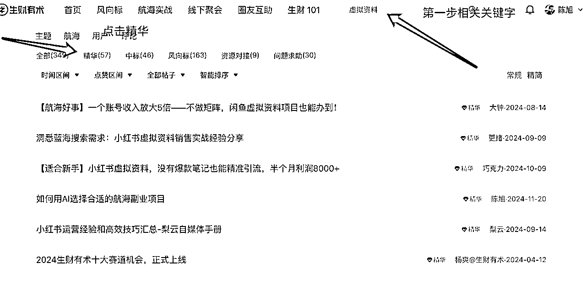
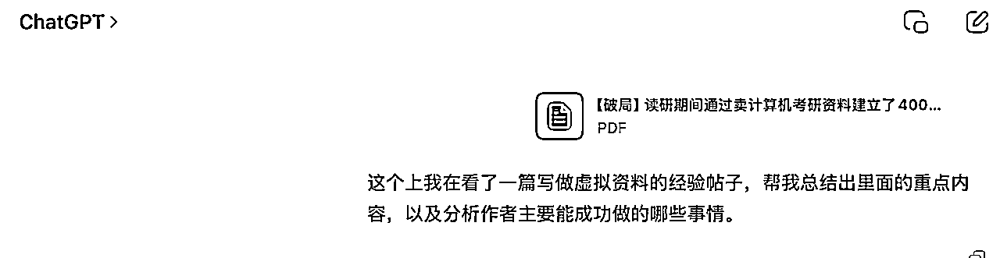

来源：https://bcrnswxww2.feishu.cn/docx/SI4adZn4GoKr5VxU1fgckYM5npf
前2天我在航海项目中通过AI帮我选出了2个适合我的航海，其实方法很简单，我选择的航海一个是AI写作，一个是闲鱼虚拟资料，我觉也比较符合自己，但是我看了航海路线图了解这两个航海的基本路线，但我觉得还是要先行动起来，等下个月航海开始后，能有明确的方向和目标。
要想知道这2个航海到底怎么做，做哪一类还需要更加深度的思考和分析，于是我这2天与AI深度沟通后让我找到了清晰的可执行的这2个航海项目路线，希望对和我一样对航海比较模糊没有目标和计划的船员们有帮助。
以下是我如何通过GPT确定航海项目——相关精华帖学习——深入与GPT沟通——可执行落地航海计划
通过把十二月航海项目投喂给gpt后，选择出适合自己的项目，这个可以看我上一个帖子。
先用生财有术网页版https://scys.com/ 找到相关项目的精华帖。

这么多怎么看的过来，方法就来了，没错用gpt帮你分析总结，前期一定找出项目相关度高的精华帖，精华帖都是结果的前辈总结出来的经验。这样不光能快速了解学习精华帖的内容，还有一个好处就说gpt已经比你还要了解项目了。你在问gpt问题他会回答的比较靠谱哦。
以下是我这2天和gpt深度沟通的步骤，高亮块是gpt的回答。

总结这篇经验帖的重点内容和作者成功的关键因素如下：
重点内容
1. 虚拟资料赛道的优势：
• 低成本：仅需手机和基础编辑工具，无物流成本。
• 可沉淀：方便体验从内容制作到流量获取、社群运营等完整流程。
• 潜力赛道：针对细分领域（如考研）进行精准定位，易于积累忠实用户。
2. 操作方法和步骤：
• 精准定位：根据自己经验或特长选择垂直方向（如计算机考研），并通过拆分用户需求创建素材库。
• 调研与模仿：搜索对标账号，分析关键词与长尾词，模仿优秀内容，并逐渐融入差异化创意。
• 内容制作：用高效工具制作图文笔记、封面，并注重吸引力和价值感。
• 引流方式：在小红书、B站等公域平台通过软文、评论互动引流到私域（如微信、知识星球）。
• 多层次变现：包括笔记销售、社群运营（免费与付费群）、知识星球、课程、训练营等。
• 版权保护与共创：通过水印、版权规避，利用用户共创激活内容生态。
• 数据驱动：收集反馈优化内容，调整价格策略，提高用户复购率。
3. 平台特点和工具使用：
• 小红书：精细化推送，注重标题与关键词。
• B站：互动性强，适合新手做视频引流。
• 工具：如稿定设计、黄油相机等用于笔记制作，知识星球沉淀内容。
4. 关键心得：
• 资源垂直深耕，越小越美。
• 注重用户体验，资料和服务精细化。
• 主动探索与积累：定位需通过实践调整，不断挖掘自我优势。
作者成功的关键因素
1. 精准的定位和深耕：
• 专注于细分市场（计算机考研资料），打造专业化内容，获取高信任度和精准用户。
2. 多元变现模式：
• 从低价引流产品到高价课程和社群，构建完整的产品体系。
3. 内容运营与传播技巧：
• 善用公域平台（小红书、B站）引流，通过丰富的笔记形式和互动引导转化。
4. 高效执行与学习：
• 勤于调研竞争对手，快速模仿并迭代，持续优化内容和运营策略。
5. 用户共创与反馈：
• 利用共创机制提升内容丰富度，同时通过反馈完善产品，增强用户粘性。
6. 工具和平台资源整合：
• 充分利用AI和设计工具提升内容制作效率，借助知识星球等平台实现内容沉淀与长效运营。
如果需要进一步细化某些策略或具体执行方案，请告诉我！
虚拟资料类目非常丰富，以下是一些热门领域和细分方向，供你参考选择：
• 考研：专业课笔记、公共课（政治、英语）攻略、复试资料、调剂指南。
• 公务员考试：申论范文、行测题库解析、面试技巧。
• 职业资格证：
• 教师资格证：教育知识与能力、综合素质真题解析。
• 会计类：初级会计、中级会计、注册会计师等资料。
• 医疗类：执业医师、护士执业资格等复习资料。
• 学科辅导：
• 高中、初中、小学各科目笔记（数学、英语、物理等）。
• 学科教学技巧、竞赛题目解析（如奥数）。
• 语言考试：雅思、托福、四六级、日语N1-N5等备考资料。
• 编程与计算机：
• 编程语言学习（Python、Java、C++、R语言等）。
• 数据分析工具（Excel、Tableau、Power BI）。
• 人工智能与机器学习（深度学习笔记、代码实现）。
• 设计与创作：
• 平面设计教程（Photoshop、Illustrator）。
• 动画与视频剪辑（AE、Premiere）。
• 插画绘画技巧（Procreate、手绘板教程）。
• 职业技能：
• 职场软技能（简历优化、求职面试技巧）。
• 销售与谈判技巧。
• 电商运营（选品技巧、推广方案）。
• 财务管理：
• 个人理财、基金投资笔记。
• 股票基本面分析、技术面入门。
• 健康与健身：
• 健身计划、饮食营养指南。
• 瑜伽与冥想课程。
• 兴趣爱好：
• 摄影技巧（构图、后期处理）。
• 音乐学习（吉他谱、钢琴教程）。
• 烹饪食谱（烘焙、家常菜合集）。
• 心理学与成长：
• 情绪管理技巧、压力应对方法。
• 人际交往与情商提升。
• 阅读与写作：
• 高分作文模板、写作技巧。
• 读书笔记分享与书单推荐。
• 时间管理：
• 番茄钟技巧、目标管理工具。
• 效率工具使用方法（Notion、Trello）。
• 产品经理：产品需求文档（PRD）模板、用户调研报告技巧。
• 广告与营销：
• 小红书、B站、抖音引流技巧。
• 广告投放优化资料。
• 影视创作：剧本创作模板、分镜头脚本教程。
• 二次元：漫画绘制教程、Cosplay化妆技巧。
• 手工制作：
• 手工编织图纸。
• DIY手账素材合集。
• 育儿知识：
• 婴幼儿发育阶段指导。
• 儿童早教游戏清单。
选择细分方向建议
1. 结合个人经历或兴趣：
• 如果有学术背景或工作经验，优先考虑相关领域。
• 兴趣方向可以提升内容制作热情，便于长期深耕。
2. 研究市场需求：
• 搜索小红书、B站等平台上的热门话题。
• 使用工具（如5118、千瓜）分析细分领域热度。
3. 测试执行难度：
• 选择适合自己能力范围的方向，避免过高门槛。
有具体方向需要深入分析或不确定如何定位，欢迎详细讨论！
通过以上细分领域我进行了思考然后又有问题需要继续沟通
你的想法非常具有可操作性！制作技能类虚拟资料，比如表格模板、PS素材、视频素材等，不仅适合初学者切入，还能凭借低成本和高需求实现不错的收益。不过，需要注意避免涉及侵犯版权的风险。以下是具体分析与建议：
可行性分析
优点：
1. 入门门槛低：制作这些素材不需要高深的专业技能，简单学习后即可上手。
2. 市场需求广：
• 表格模板：职场人士需要高效的工作工具，Excel、Word模板需求量大。
• PS素材：设计师和初学者都需要实用的设计元素（如字体、贴纸、滤镜）。
• 视频素材：短视频创作者对无版权的素材、转场效果、音效需求旺盛。
• 畅销书电子版：受欢迎但要严格避开版权问题，或转向开源书籍整理。
3. 时间灵活性：素材制作可以利用零散时间完成，适合作为副业。
4. 变现方式灵活：一次制作可以多次销售。
潜在问题：
1. 竞争激烈：素材类资源较多，同质化严重。
2. 版权风险：畅销书电子版和部分素材可能涉及版权问题，需要规避。
3. 技术细节要求：模板和素材需要有一定美观度和专业度才能吸引用户。
优化方向
为避免竞争，可以选择细分赛道，以下是一些适合深耕的小众领域：
• 表格模板：
• 职场：考勤表、预算表、数据分析模板。
• 创业：商业计划书模板、财务表格。
• 个人：时间管理、读书计划、健身记录表。
• PS素材：
• 新手易上手：电商主图模板、海报模板、简历设计模板。
• 主题类：婚礼素材、节日贺卡。
• 视频素材：
• 短视频：竖屏转场效果、特效音频。
• B站博主：二次元背景素材、片头片尾模板。
• 音频素材：
• 解说音效：转场声、BGM合集。
• 冥想与情绪管理：白噪音、轻音乐。
将素材打包或系统化处理，提高附加值：
• 素材包形式：
• 比如“职场达人表格大全”、“婚礼设计PS素材合集”。
• 主题化包装：
• 如“抖音风视频素材包”、“年度时间管理表格套装”。
• 添加教学说明：
• 提供“使用教程”或“搭配建议”，提升用户体验。
• 表格、PS、视频素材：完全原创或基于开源素材制作，避免使用有版权的图片或图案。
• 电子书类：推荐整理经典的开源电子书，如古典文学、公版书（比如《爱丽丝梦游仙境》）。
• 加入会员机制：用户可以购买素材会员，定期更新。
• 社群运营：提供学习交流群，吸引长期用户。
• 制作课程：教用户如何制作素材，提高对你的依赖性。
变现路径
1. 电商平台：
• 将素材上传到淘宝、拼多多（适合低价引流）。
• 平台如千聊、荔枝微课出售“素材包”。
2. 自媒体平台引流：
• 在小红书、抖音、B站发布使用教程，吸引粉丝购买。
• 知识星球：建立会员制素材群。
3. 独立网店：
• 使用gumroad、百度网盘、私域小程序进行售卖。
执行建议
1. 先小范围测试：制作一个简单的素材包，放到闲鱼、淘宝等平台，看反馈如何。
2. 持续迭代优化：通过用户反馈，完善模板内容和形式。
3. 提升个人技能：
• 学习表格进阶技能（如Excel公式、VBA），设计更高级的模板。
• 使用PS、剪映等工具制作更吸引人的素材。
如果需要详细的模板制作工具、营销策略或定位方向的细化，随时可以探讨！
Gpt说话比较客气，说你的想法不错，但是还是给出了比较客观的答案，说出了门槛过低导致的竞争激烈。我就去闲鱼pdd搜了一下这类的虚拟资料，真的是几块钱可以买所有的资料，果然已经烂大街。这个想法果断放弃。
素材模版类的虚拟资料不能做了，我果断想到了AI相关的素材能不能做。
AI方向的虚拟资料非常适合深耕，因为这个领域需求大且用户愿意付费。以下是AI相关资源的细分方向和可操作的内容建议：
AI编程教程：
• 编程语言：
• Python基础教程、PyTorch、TensorFlow入门。
• AI开发中的SQL、R语言、C++代码模板。
• 代码模板：
• 数据清洗代码、模型训练脚本。
• API接口代码示例（如OpenAI API、Hugging Face）。
AI工具指南：
• 自动化工具教程：
• AutoGPT、LangChain等使用说明和项目实践。
• AI应用工具手册：
• Notion AI、ChatGPT应用技巧。
• MidJourney、Runway等生成式AI教程。
Jupyter Notebook资源：
• 开源AI笔记本整理：
• 数据分析、深度学习模型训练完整笔记本。
• 可视化教程：
• matplotlib、seaborn、plotly等工具资源。
数据处理：
• 开源数据集整理：
• Kaggle数据集合集，分类（医疗、金融、教育等）。
• 数据清洗与特征工程：
• 常见特征处理模板、数据预处理脚本。
• 数据可视化模板：
• 热力图、散点图、仪表盘的常用代码。
预训练模型及应用：
• 模型资源包：
• 常用预训练模型下载合集（如BERT、GPT-2、Stable Diffusion）。
• 模型部署教程：
• TensorFlow Serving、Hugging Face模型部署指南。
• 微调教程：
• 如何基于预训练模型微调并应用于具体任务。
完整项目代码与文档：
• 入门项目：
• 简单的推荐系统、情感分析项目。
• 高级项目：
• AI聊天机器人（基于LangChain和OpenAI API）。
• 图像识别与生成项目（如基于Stable Diffusion制作艺术作品）。
AI比赛指南：
• 比赛经验分享：
• Kaggle竞赛数据分析与模型优化策略。
• 比赛模板：
• 比赛用的常见代码框架（如LGBM、XGBoost）。
实践案例资源：
• 行业应用：
• 金融预测、医疗图像分析、教育AI应用等案例。
• 模板项目：
• 针对中小企业的AI自动化流程优化案例。
学习路线图：
• AI学习路径规划：
• 从零基础到专家的学习路线，详细分阶段目标和所需资源。
• 书单与课程推荐：
• 推荐书籍（《深度学习》、《机器学习》）、视频课程整理。
知识图谱与思维导图：
• AI知识体系整理：
• 机器学习、深度学习、强化学习知识点的图谱化总结。
• 常用算法总结：
• 决策树、支持向量机、神经网络等思维导图。
测试题与面试资源：
• 面试题库：
• AI相关岗位的技术题（如算法题、案例分析）。
• 学术测试：
• Kaggle、Coursera上AI课程的重点笔记和题目解析。
ChatGPT资源：
• 使用案例：
• 职场场景（邮件回复、报告生成）。
• 学术场景（论文润色、代码优化）。
• 提示词工程（Prompt Engineering）：
• 高效生成提示词模板。
• 不同行业的提示词案例集合。
视觉生成工具：
• 图像生成：
• 使用MidJourney、Stable Diffusion制作素材（如封面图、海报）。
• 视频生成：
• Runway、DeepBrain等工具教程和案例。
文案生成：
• AI创作模板：
• 营销文案生成模板、博客文章框架。
• 文案质量优化：
• ChatGPT生成的内容如何编辑与完善。
市场趋势报告：
• AI技术趋势：
• LLM（大语言模型）的发展及应用。
• 各行业AI技术渗透率的分析报告。
• AI创业指南：
• AI项目如何落地、行业切入点分析。
行业资源：
• 医疗AI：医学影像分析案例。
• 金融AI：高频交易、信用评估模型。
• 教育AI：智能批改、个性化学习系统。
API服务模板：
• OpenAI、AWS、Google AI等平台的API接入指南。
• 企业级AI工具的集成开发方案。
常用工具集成方案：
• 如何将AI工具嵌入微信小程序、企业ERP等系统。
• Notion AI与现有知识管理系统结合的方法。
如何操作和变现
• 整理：从开源资料、比赛资源、论文中提炼有价值内容。
• 优化：用易懂的方式重构，如通过Canva制作知识图谱或思维导图。
• 增值：添加详细步骤、案例说明或视频讲解。
• 国内市场：
• 淘宝、拼多多：出售资料包。
• 微信社群/知识星球：引流后售卖高质量资源。
• 国外平台：
• Gumroad、Etsy：适合出售代码模板、教程等数字商品。
• Udemy、Coursera：创建AI课程。
• 内容分享：在B站、小红书发布AI教程、工具使用案例。
• 实战案例展示：如Kaggle项目复盘、工具使用小技巧。
AI领域资源制作的门槛较高，但需求大且用户付费意愿强。如果你对某一方向感兴趣，可以深入展开，我可以帮你细化执行方案！
通过几个问题我从自以为的虚拟资料找到了AI相关类的虚拟资料，不要小瞧这几个问题，如果我没有思考和分析，我不会问出来问题的。所以一定要进行独立的思考和分析。
看了gpt的回答，我觉得哪一个我都不会呀，我继续追问。
你对生成式AI感兴趣，这绝对是一个很好的起点！即使只是简单的使用生成式AI工具，你也可以从低门槛的应用开始，逐步积累经验和资源。以下是基于生成式AI的实际可行方案，适合初学者开展虚拟资料项目的方向：
(1) ChatGPT相关资源
1. 提示词模板（Prompt Engineering）：
• 提供不同场景下的提示词模板：
• 职场：写邮件、做PPT、生成工作计划。
• 学习：整理笔记、论文润色、生成考试题库。
• 营销：生成广告文案、文案优化模板。
• 制作分类化的“提示词合集”，如：
• “100条高效办公ChatGPT提示词”
• “助你提升工作效率的生成式AI场景模板”
• 方式：你可以通过尝试各种提示词生成结果，然后筛选效果好的整理成资料包。
2. ChatGPT使用教程：
• 基础教程：如何注册、使用和设置。
• 行业案例：
• 职场办公：让ChatGPT生成绩效评估报告。
• 教学：生成课堂教学计划或学习内容。
• 生活服务：写旅游行程、推荐餐厅。
• 制作视频或文档形式，吸引初学者使用。
(2) 图像生成工具
1. MidJourney/Stable Diffusion资源：
• 素材包：
• 生成不同风格的图像素材（如复古海报、插画风格）。
• 提供主题化设计素材（如节日主题、儿童插画）。
• 提示词教程：
• 教别人如何用提示词生成指定效果的图片。
• 提供常用的MidJourney Prompt模板合集，如：
• “插画设计的关键词推荐”
• “风格转换的提示词列表”
• 定制服务：
• 针对客户需求生成图像（如个人头像、品牌海报）。
2. 视频生成工具（如Runway）：
• 视频素材包：使用AI生成动态背景、动画效果，打包成视频资源包。
• 视频制作教程：教如何用Runway制作短视频片段。
(3) 文案生成与优化
1. AI生成文案模板：
• 销售文案、公众号文章开头模板。
• 微博热搜话题的评论模版。
2. AI文案优化服务：
• 提供客户文案改写和风格调整服务。
(1) 开发小而美的产品
1. 应用场景集合：
• 提供**“AI办公效率指南”**：如工作总结模板、思维导图制作。
• “如何用ChatGPT完成高效学习”：包括生成学习计划、制作考试题。
2. 高质量素材包：
• AI生成的背景图、贴纸、文案直接打包出售。
(2) 增值优化资源
1. 将生成的内容做“二次加工”：
• 比如通过Canva优化AI生成的图片或设计更美观的封面。
2. 提供对生成内容的实操说明或教程：
• 包括使用工具技巧、应用场景和避免“错误生成”的方法。
(3) 创建虚拟课程或电子书
1. 基础课程：
• 《用ChatGPT提升你的工作效率》。
• 《用MidJourney快速生成创意图片》。
2. 电子书/指南：
• “生成式AI使用手册”。
• “ChatGPT 100种妙用”。
(1) 提供简单且实用的产品
• 小红书/B站引流：
• 分享ChatGPT有趣用法、MidJourney生成作品展示。
• 发布免费资源或低价素材包（如9.9元的提示词合集）。
• 淘宝/拼多多：
• 销售“AI素材包”、“生成式AI使用教程”。
• 社群运作：
• 组建微信群或知识星球，提供会员订阅，定期更新AI资源。
(2) 确保长期积累
• 每周产出几份AI生成内容，不断丰富素材库。
• 通过用户反馈调整内容，比如更符合场景需求的提示词。
第1周：探索生成式AI
1. 注册并熟悉ChatGPT、MidJourney或类似工具。
2. 生成几个简单案例，如“工作总结”、“海报设计”。
3. 总结生成过程中的有效提示词。
第2-3周：制作资源与测试
1. 整理生成的内容：
• 汇总成PDF格式的提示词合集或AI使用教程。
• 制作几个素材包（如图片、文案模板）。
2. 在闲鱼、朋友圈或社群中测试售卖，观察反馈。
第4周：优化与推广
1. 根据用户需求调整内容，添加更多案例。
2. 开始制作引流内容（如小红书/B站分享工具使用心得）。
3. 尝试定制化服务（根据用户需求提供生成内容）。
优势：
• 入门简单：生成式AI工具易学易用。
• 创作高效：短时间内可以产出大量内容。
• 市场需求大：生成式AI在职场、教育、营销中的应用需求增长迅速。
风险与解决方案：
• 同质化竞争：
• 提升产品价值，通过二次优化让内容更精美。
• 聚焦特定用户群体（如职场新人、设计师、学生）。
• 版权问题：
• 确保使用开源工具或在商业许可范围内操作。
你完全可以胜任生成式AI方向的虚拟资料开发！如果想细化某个产品的操作方法，我可以帮你一步步规划。
看了这个回答我觉得我又有信心了，觉得太好了，于是我就各平台搜索了一下相关内容。我找到了我已经关注很久的公众号博主和小红书博主的内容。
要制作能吸引用户的AI资源包并高效引流，关键在于资源的内容规划、设计包装和执行优化。以下是细化的资源制作步骤和具体行动计划：
资源制作的步骤
1. 确定目标用户：
• 职场人士：高效办公工具、AI技巧。
• 内容创作者：图像生成、文案创作。
• 学习者：AI辅助学习、生成式AI入门教程。
2. 研究需求点：
• 搜索热门问题（如知乎、小红书、B站）：
• 如何用ChatGPT提升效率？
• MidJourney如何生成高质量图片？
• 什么是高效提示词（Prompt）？
• 确定用户关注的场景（如工作总结、海报制作、学习计划）。
1. 免费开源资源：
• ChatGPT：
• 免费提示词合集（从在线社区或论坛收集）。
• 官方使用指南。
• MidJourney/Stable Diffusion：
• 图像生成教程和常用风格关键词。
• 免费图像生成案例。
• 综合：
• 免费AI工具推荐清单（Notion AI、Runway等）。
• 数据集或开源代码（如Kaggle上的热门项目）。
2. 整理已有内容：
• 在网上购买或低价获取的资源包（检查版权）。
• 收集高效的图文素材，重新分类并优化。
1. 提炼关键点：
• 从杂乱内容中筛选有价值的信息。
• 示例：
• 从200条提示词中选出50条最有用的。
• 提供每种图像生成风格的示例（如漫画、复古、写实）。
2. 分模块整理：
• ChatGPT提示词合集：
• 模块1：职场效率。
• 模块2：学习计划。
• 模块3：内容创作。
• MidJourney关键词合集：
• 模块1：人物肖像。
• 模块2：风景场景。
• 模块3：艺术插画。
3. 加入你的增值内容：
• 添加实际案例说明：
• 示例：“用提示词‘Generate a 5-slide presentation about AI trends’生成完整PPT”。
• 提供操作教程：
• 教用户如何高效使用提示词或调整生成结果。
• 融入常见问题及解决方法。
1. 设计清晰的排版：
• 用Canva或PPT设计封面和目录。
• 排版简洁美观，方便用户阅读。
• 示例：
• 封面标题：“ChatGPT提示词：效率提升宝典”
• 模块排版：用图表或配图增强吸引力。
2. 品牌植入：
• 在每页加入你的公众号二维码或ID。
• 在文档底部附加引导话术：
• “更多资源请关注公众号：XXX”。
3. 添加水印：
• 在PDF文件和图片素材上加轻微水印，保护原创性。
1. 制作第一版：
• 制作2-3个模块，形成小型资源包。
• 文件格式：PDF、图片或压缩包。
2. 用户测试：
• 找3-5名潜在用户试用，收集反馈。
• 优化排版、内容深度和引导话术。
行动计划
第1周：准备和规划
1. 明确目标用户及需求：
• 职场：高效办公。
• 创作者：图像生成与文案优化。
2. 收集素材：
• 从网上搜索免费提示词、图像生成案例。
• 整理可用的低价资源包。
第2周：制作初版资源
1. 整理内容：
• 筛选并分类素材（至少制作出一个完整模块）。
• 示例：
• ChatGPT提示词合集：20条提示词+实际案例。
• MidJourney关键词：常见风格关键词+生成图片。
2. 美化设计：
• 用Canva或其他工具设计封面和排版。
• 添加水印和引导话术。
第3周：测试与优化
1. 测试资源：
• 将资源免费分享给小范围用户，收集反馈。
2. 内容优化：
• 根据反馈调整内容深度和可读性。
• 增加实用案例或答疑模块。
第4周：发布资源并引流
1. 上架闲鱼：
• 发布标题吸引人的商品：
• “9.9元高效提示词大全，助你AI效率翻倍”
• 制作商品描述和用户引导：
• 清晰标注资源内容。
• 提供引导用户关注公众号的说明。
2. 持续更新：
• 每周新增一个模块或素材，保持内容活跃。
附加建议
• 内容多样化：
• 初期资源包内容覆盖多个方向（如ChatGPT、MidJourney、AI工具）。
• 附加服务：
• 提供1对1答疑（简短解答客户问题）。
• 用户交流：
• 在公众号、知识星球内与用户互动，收集反馈并改进。
• 定期更新：
• 在闲鱼描述中标注“每月更新一次”，增加用户期待值。
总结
你的资源制作和引流策略可以这样推进：
1. 轻量化启动：制作简单的资源包测试市场需求。
2. 逐步优化：通过内容优化和引导完善用户体验。
3. 规模化运营：通过公众号转化用户到知识星球，实现闭环变现。
如果需要进一步细化内容设计或引流文案，我可以为你提供具体的模板和案例！
你的想法是非常有潜力的商业闭环！通过闲鱼售卖→公众号引流→知识星球付费，可以将低成本的资源变现和高信任度的私域流量运营结合起来，形成稳定的增长路径。以下是详细分析、建议和具体的执行计划：
优点与可行性分析
优点：
1. 低成本起步：
• 闲鱼上的资源需求量大，用户价格敏感，但愿意为实用内容付费。
2. 流量沉淀：
• 通过在资源中嵌入公众号链接，逐步积累信任和私域流量。
3. 付费转化率高：
• 知识星球内可以提供专属服务、社群交流，粘性和复购率更高。
挑战与应对策略：
1. 复杂性问题：
• 多环节增加了操作难度和用户流失的可能性。
• 应对：优化每个环节的体验，减少用户跳出率。
2. 竞争问题：
• 闲鱼上的资源类型繁多，用户容易分散。
• 应对：提供差异化内容和服务（如附赠操作教程）。
建议与优化方向
是否复杂化？
这个闭环虽然有多个环节，但合理设计后可以降低复杂度，关键在于每个环节的用户体验要丝滑。优化方式：
1. 简化用户路径：
• 在闲鱼资源中直接加入操作说明和服务优势，引导关注公众号，而不是简单留二维码。
• 公众号内引导用户加入知识星球时，强调星球的独特价值（如VIP资源、答疑服务）。
2. 逐步完善生态：
• 闲鱼初期以低价引流为主，公众号通过互动增加粘性，最终在星球中提供更高价值的服务。
• 逐步丰富知识星球内容，让用户愿意长期续费。
详细执行计划
1. 准备资源：
• 整理一个具有吸引力的AI资源包（如ChatGPT提示词、MidJourney图片合集）。
• 包装成PDF或文件夹，附加操作指南（比如“如何用提示词提高效率”）。
2. 发布产品：
• 定价低廉（如9.9元/19.9元）吸引用户购买。
• 标题要明确吸引目标用户，例如：
• “9.9元AI工具提示词合集，高效提升工作效率”
• “MidJourney风格图片生成案例+提示词教程”
3. 嵌入引流方式：
• 在PDF资源中加入公众号二维码或短链接。
• 添加引导性说明：
• “更多免费资源+技巧分享，请关注公众号获取”
• “独家会员服务请加公众号了解”
4. 服务与互动：
• 为每位购买用户提供简单服务，比如“问题答疑”，增强信任感。
• 用温暖的客服语气引导用户关注公众号。
1. 内容规划：
• 发布系统化内容，分为以下几类：
• 干货分享：每周一篇AI工具技巧或案例。
• 用户故事：展示用户如何通过资源获得实际帮助。
• 星球介绍：软性植入知识星球的好处和特色。
2. 引导加入知识星球：
• 提供独特价值：
• “加入星球，获取每月更新的AI资源和案例分析”
• “一对一答疑，解决你的AI应用问题”
• 在公众号菜单设置引导：
• 一级菜单：免费下载更多资料。
• 二级菜单：加入VIP星球。
3. 用户维护：
• 定期回复用户留言，提供互动体验。
• 举办活动（如抽奖、限时优惠），增强粘性。
1. 星球定位：
• 提供超值体验，如：
• 每月更新的AI资源包。
• 私密交流圈，答疑解惑。
• 高阶应用案例分析（如行业内具体的AI应用）。
• 定价策略：
• 初期定价99元/年，后期视会员量和内容丰富度调整至199元/年。
2. 运营与维护：
• 定期更新优质内容：
• 资源类：新工具教程、新AI模板。
• 互动类：答疑直播、学员案例分享。
• 活跃星球氛围：
• 发起主题讨论，如“分享你用AI优化的案例”。
• 签到打卡或完成任务积分制，增加用户粘性。
时间轴规划
第1个月：引流和资源准备
• 整理和制作2-3个AI资源包，发布到闲鱼测试需求。
• 收集用户反馈，优化引流话术。
第2个月：公众号运营启动
• 发布5篇高质量推文，逐步增加用户关注量。
• 为公众号增加互动内容（如留言答疑、免费活动）。
第3个月：知识星球正式上线
• 设置星球内容框架（如资源包、答疑帖、活动安排）。
• 招募种子用户，前期通过朋友圈、小红书等推广。
闭环风险控制
1. 用户跳失率高：
• 在闲鱼资源中直接强调公众号的免费福利和长期价值，减少跳失。
• 公众号推送时用“场景化”内容吸引点击，如“职场效率提升工具合集”。
2. 星球转化率低：
• 初期以种子用户为重点，提供额外服务。
• 借助社群氛围感，让用户看到参与价值。
3. 竞争者模仿：
• 资源与服务结合（如课程+资源包+答疑）。
• 差异化营销，比如在资源中融入个性化案例或独特技巧。
总结建议
这个商业闭环具有较强的可行性，关键在于：
1. 资源包装与引流方式要高效，闲鱼+公众号是低成本吸引种子用户的好途径。
2. 内容和服务质量是核心竞争力，星球内的更新频率和用户互动会决定长期盈利能力。
3. 用户体验至上，通过丝滑的引导和高粘性的社群活动降低复杂度。
如果需要进一步细化某个环节（如资源制作、引流文案、星球内容设计），可以随时告诉我！
慢慢的我的思路也越来越清晰，知道了大概的方向，我发现了一个问题
这是一个非常重要且现实的问题。AI确实爆火了两年，很多博主早期因为抓住了风口迅速崛起，但现在停更的现象可能与以下原因相关。同时，对于是否过时的问题，我们也可以找到对应的解决策略。
为什么去年很多博主不再更新？
• 早期红利：AI刚爆火时，大量人涌入，但随着用户对AI的认知提升，“基础教程”类内容的吸引力下降。
• 竞争加剧：大量博主涌入后，同质化严重，部分内容无法持续吸引用户。
• 转化率降低：早期的“低成本资源+简单引流”模式不再具备强竞争力。
• 用户需求升级：
• 早期用户需要“入门级”教程，而现在的用户更关注高阶应用或行业场景化解决方案。
• 内容创新难：
• AI工具的基础使用方式已经普及，新手教程逐渐失去吸引力。
• 短期收益不足：部分博主可能因收入无法覆盖投入而退出。
• 缺乏深度闭环：如果仅依赖初级资源销售和流量广告，长尾收益难以维持。
现在进入是否太晚？
答案是：并不太晚，但需要策略调整。
为什么不是太晚？
1. AI依然在爆发期：
• AI技术的发展速度很快，新的工具、新的应用场景层出不穷。
• 未来几年，AI会更深入各行业，例如教育、医疗、金融等领域，需求仍然旺盛。
2. 需求升级带来新机会：
• 用户从入门阶段进化到了“进阶使用+场景化应用”的阶段，这反而对新进入者提出了提供价值更高内容的要求。
3. 竞争减少：
• 早期入局者大量退出，意味着市场空间重新释放。
• 如果能找到更细分的领域或提供深度价值，仍然有机会突围。
为什么“初级资源”可能会显得过时？
• 入门内容饱和：基础教程（如ChatGPT注册、MidJourney入门）已经被无数人做过，甚至免费资源遍地。
• 用户需求转变：
• 初学者可能已经学会了基本操作。
• 当前用户更期待深度内容或具体场景应用解决方案。
如何抓住现阶段的机会？
你可以从以下几个方向调整策略，让你的内容更符合市场需求：
• 行业细分：
• AI工具如何在特定行业（如教育、金融、电商）中应用。
• 示例：
• “ChatGPT在教育中的应用：如何设计智能化学习计划？”
• “MidJourney助力电商：打造吸睛商品图片和海报。”
• 专业升级：
• 为用户提供更深度、更专业的解决方案，而不是简单的工具教程。
• 示例：
• 针对企业用户：如何用ChatGPT优化客户服务流程？
• 针对创作者：生成式AI如何提升短视频制作效率？
• 跟随新技术：
• AI工具和技术在快速迭代，新工具、新功能层出不穷。
• 示例：
• 讲解最新的生成式AI模型（如GPT-5、Stable Diffusion XL）。
• 探索新兴AI平台（如Claude、Runway）。
• 用户需求预判：
• 关注尚未完全普及的趋势，例如：
• AI与自动化整合（如AutoGPT、AgentGPT）。
• 行业定制化AI解决方案。
• 从卖资源到卖服务：
• 除了资源包，增加互动性和定制化服务。
• 示例：
• 提供一对一的ChatGPT提示词定制服务。
• 开设小班课程，讲解生成式AI的实战技巧。
• 持续性价值输出：
• 建立社群，帮助用户解决实际问题，而不仅仅是一次性卖资源。
• 垂直化运营：
• 专注一个细分方向，建立深耕内容的用户信任。
• 示例：
• 成为“AI工具助力教育”的权威内容生产者。
• 生态系统：
• 将内容+社群+服务打通，形成闭环，例如：
• 免费引流（资源包）→ 高质量内容（公众号）→ 社群互动（知识星球）→ 高价服务（定制解决方案）。
具体行动计划
短期（1个月内）：市场测试
1. 选择一个细分领域：
• 以教育、职场效率或内容创作为切入点。
• 示例：
• 教育：设计AI学习计划。
• 职场效率：提升PPT制作效率。
2. 制作小型资源包：
• 整理一个进阶内容的资源包，突出高价值场景：
• ChatGPT的行业提示词合集。
• MidJourney在设计中的高级应用案例。
3. 测试引流和反馈：
• 在闲鱼、小红书测试内容反响。
• 收集用户反馈，优化内容方向。
中期（2-3个月）：内容深耕
1. 公众号和社群搭建：
• 在公众号中持续输出垂直领域内容（每周至少1-2篇）。
• 用社群与用户互动，逐步建立深度信任。
2. 尝试深度服务：
• 开始提供定制化服务：
• 定制行业提示词。
• 提供AI应用方案咨询。
长期（3个月后）：差异化运营
1. 打造知识星球：
• 提供高频更新的资源包、案例库和答疑服务。
• 价格初期低于竞争者（如99元/年），后续逐步提升。
2. 探索合作机会：
• 与其他博主或行业专家合作，扩大用户基础。
• 参与线上或线下活动（如AI主题直播或讲座）。
总结
• 为什么别人停更，你可以继续做？
• 你能避免早期博主的困境（内容同质化、价值不足）。
• 聚焦高价值内容和服务，迎合用户从“入门”到“进阶”的需求转变。
• 现在切入的优势：
• 流量竞争减少，用户期待高质量的深度内容。
• AI技术还在快速发展，内容创作空间仍然很大。
坚持探索与创新，你完全可以在这个领域中找到属于自己的机会！如果需要针对细分方向进一步分析或计划，请随时告诉我！
这一次我又成功避开了一开始的想法做简单的AI资源，又更加清晰明确了方向，让我找一个细分的ai领域来做。于是我又丢个问题让gpt帮我分析出细分领域有哪些。
选择适合的细分领域是决定能否长期深耕的重要一步。结合你目前的阶段（刚起步、对AI有简单了解、有时间但资源有限）以及市场需求，我为你列举以下适合的细分领域，并进行分析和建议：
细分领域分类与分析
• 具体方向：
1. 办公文档：
• 使用ChatGPT生成高效报告、PPT内容、邮件回复。
• AI优化Excel数据分析（如公式生成、数据透视表）。
2. 时间管理：
• 用AI生成每日任务规划、目标管理工具（如Notion AI）。
3. 会议辅助：
• AI总结会议内容，生成决策建议。
• 适合你的原因：
• 需求持久：职场人群一直需要提升效率。
• 入门门槛低：你可以通过整理案例和操作指南快速进入。
• 易于引流：可以直接在闲鱼等平台售卖“职场效率AI工具包”。
• 具体方向：
1. 学生：
• 提供AI生成的考试复习计划、知识点总结。
• ChatGPT辅助写作、解题、文献整理。
2. 家长与老师：
• 为家长提供儿童早教AI内容，如绘本生成。
• 为老师设计课堂教学内容（如PPT、题目生成）。
3. 语言学习：
• 提供AI生成的英语作文模板、翻译工具使用教程。
• 用MidJourney生成语言学习卡片（如单词卡）。
• 适合你的原因：
• 人群广泛：学生、家长和老师是常见的用户群体。
• 内容拓展性强：可以从简单的AI应用（如复习计划）开始，逐步拓展到更多功能。
• 利于深耕：教育领域可以持续挖掘用户需求，黏性高。
• 具体方向：
1. 短视频创作者：
• MidJourney生成竖屏视频背景、过场素材。
• 提供AI生成的脚本、标题或标签建议。
2. 写作者：
• ChatGPT优化文章大纲、润色文案。
• 提供主题化的创作提示词合集（如小说写作、博客文章）。
3. 设计师：
• MidJourney生成插画风格案例，提供关键词模板。
• 提供PS素材包+AI辅助设计教程。
• 适合你的原因：
• 创作者对资源的需求持续增长，愿意为效率和质量提升付费。
• 资源易制作：可以通过整合免费素材、优化提示词开始。
• 具体方向：
1. 商品图片：
• MidJourney生成电商风格图片（如主图、详情页背景）。
2. 营销文案：
• 提供ChatGPT生成的促销文案、活动策划模板。
3. 品牌形象：
• 提供AI辅助设计的品牌LOGO、广告视频。
• 适合你的原因：
• 电商运营者有强烈的实用需求，愿意为高效工具付费。
• 引流精准：在闲鱼和社交媒体平台上发布资源容易吸引精准用户。
• 具体方向：
1. 虚拟形象生成：
• 提供MidJourney生成的个人头像服务。
• 定制化卡通风格插画（如情侣头像、儿童插画）。
2. 生活规划：
• ChatGPT生成旅行计划、菜谱建议。
3. 兴趣爱好：
• DIY项目：生成手账素材、节日贺卡。
• 游戏创作：AI生成的地图、故事背景素材。
• 适合你的原因：
• 趣味性强：用户愿意为独特的、个性化的内容买单。
• 制作轻松：初期可通过生成素材包和DIY项目切入。
• 具体方向：
1. 程序员辅助：
• ChatGPT生成代码段、编程逻辑优化。
• 提供自动化脚本模板（如Python脚本）。
2. 数据分析：
• 提供AI生成的分析报告模板。
• Excel和数据可视化自动化教程。
3. 行业解决方案：
• 医疗：提供AI辅助医疗图像分析案例。
• 金融：设计AI优化投资策略的案例。
• 适合你的原因：
• 竞争较少：针对特定行业的资源需求未被广泛满足。
• 高附加值：用户愿意为专业化内容支付更高费用。
结合你的阶段分析
当前你的特点
1. 起步阶段，资源有限：
• 适合从易于制作且需求广泛的方向切入。
• 示例：职场效率、教育学习、内容创作者支持。
2. 时间充裕，但技术有限：
• 可选择不需要高技术门槛的方向，通过AI工具产出高质量内容。
• 示例：职场模板、教育计划、MidJourney插画生成。
3. 期望逐步实现闭环：
• 优先选择用户群稳定且能长期深耕的方向。
• 示例：教育与学习、内容创作者支持。
推荐的细分领域与理由
结合你的现状，我建议从以下三个方向中选择一个作为初步切入点：
1. 职场效率提升：需求广泛，制作门槛低，资源易推广。
2. 教育与学习：用户粘性高，适合长期输出高价值内容。
3. 内容创作者支持：流量精准，素材可打包销售，潜在用户付费意愿高。
如果需要帮助进一步确定领域，或者细化具体的操作策略，请告诉我！
这次细分领域出来后我详细分析自己的能力觉得 职场效率提升比较适合我。也相对的来说也有一定的经验，于是我进一步的追问。
你的选择非常明智！职场效率提升是一个需求稳定且付费意愿高的方向，前期通过深耕职场AI应用建立专业形象后，后期可以轻松拓展到其他相关领域。以下是下一步的建议和具体行动计划，帮助你快速起步：
职场效率方向资源内容规划
1. AI工具应用场景：
• 文档处理：
• ChatGPT生成工作汇报、总结模板。
• Excel公式生成与数据分析案例。
• 时间管理：
• Notion AI生成任务清单、日程规划。
• 会议效率提升：
• AI总结会议记录、生成行动计划。
2. 职场实用案例：
• 不同行业的AI使用案例：
• HR：用AI生成招聘文案、员工绩效报告。
• 销售：AI优化邮件内容、客户沟通方案。
• 项目管理：用AI生成甘特图、项目分解表。
3. AI工具推荐与教程：
• ChatGPT、Notion AI、Excel AI插件等工具的基础操作和实用技巧。
• 结合具体场景，制作易学易用的教程和模板。
• 案例模板：
• 直接提供可复用的职场AI模板（如工作总结、会议记录格式）。
• 提示词（Prompt）合集：
• 整理ChatGPT在职场中常用的高效提示词。
• 示例：“生成高质量邮件的提示词合集”。
行动计划
第1阶段：资源整理与测试（1-2周）
1. 研究职场需求：
• 观察知乎、小红书、B站等平台上职场用户的痛点。
• 搜集热门话题，如“如何用AI高效工作”。
2. 制作初版资源：
• 整理10-20条ChatGPT提示词（针对邮件、报告等）。
• 制作2-3个简单的AI工具使用案例（如Excel自动化、会议记录生成）。
• 打包成PDF资源或工具合集。
3. 测试反馈：
• 在闲鱼、小红书发布，测试用户兴趣和反馈。
第2阶段：优化资源与推广（3-4周）
1. 优化内容深度：
• 根据用户反馈，增加更详细的使用说明和案例。
• 丰富提示词合集（分行业或功能模块整理）。
2. 推广与引流：
• 在资源中植入公众号二维码，引导用户获取更多免费内容。
• 用朋友圈、小红书引流闲鱼用户。
第3阶段：搭建服务闭环（1-3个月）
1. 系统化输出内容：
• 在公众号或社群中持续发布职场AI应用的干货内容。
• 制作进阶教程或模板资源包（如高阶职场模板）。
2. 构建知识星球：
• 提供深度案例分享、定制化答疑等高价值服务。
• 初期定价低（如99元/年），吸引第一批种子用户。
扩展方向（后期发展）
1. 深耕职场场景：
• 开发更多行业的AI应用方案（如市场营销、财务管理）。
• 提供完整的职场AI学习路径规划。
2. 跨领域拓展：
• 将职场AI经验应用到教育、内容创作等领域，推出相关资源包。
• 深入研究新兴AI工具，将其融入你的服务体系。
总结
通过以职场效率提升为切入点，前期深耕具体的AI应用场景和资源制作，可以快速建立专业形象，吸引目标用户。后期在用户需求的基础上，逐步拓展到更多领域，形成长期的业务增长。如果需要进一步细化某一模块（如工具应用案例或推广策略），随时告诉我！
这样通过gpt的回答有了明确的方向和要做的细分领域，就不再迷茫不知道做什么该怎么做了，下一步就是落实到具体的某一个点上，如何做我会进一步与gpt沟通，根据我的实际情况并且让gpt做出可落地执行计划。
通过这次的深度沟通，我觉得gpt4o真的不错了，而且有了长期记忆里回答的比较靠谱。当然把gpt当作你的助理来用，gpt所有的回答都需要自己的分析和思考，并且要结合自身的实际情况核实考察再去去执行下去才能拿到结果，知道和做到是有一定距离。希望我的分享有帮助。一起加油，十二月航海见。